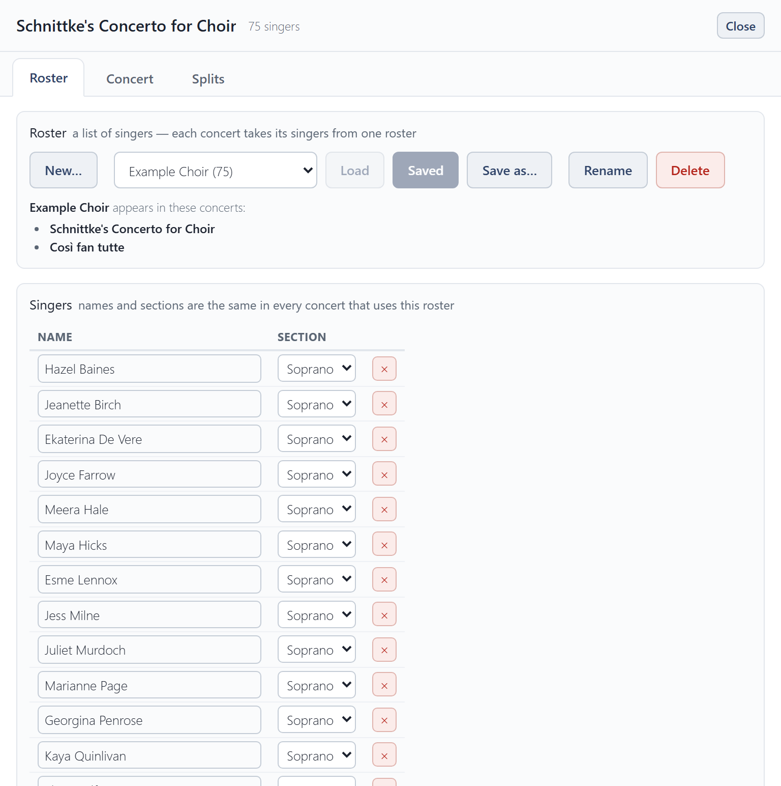
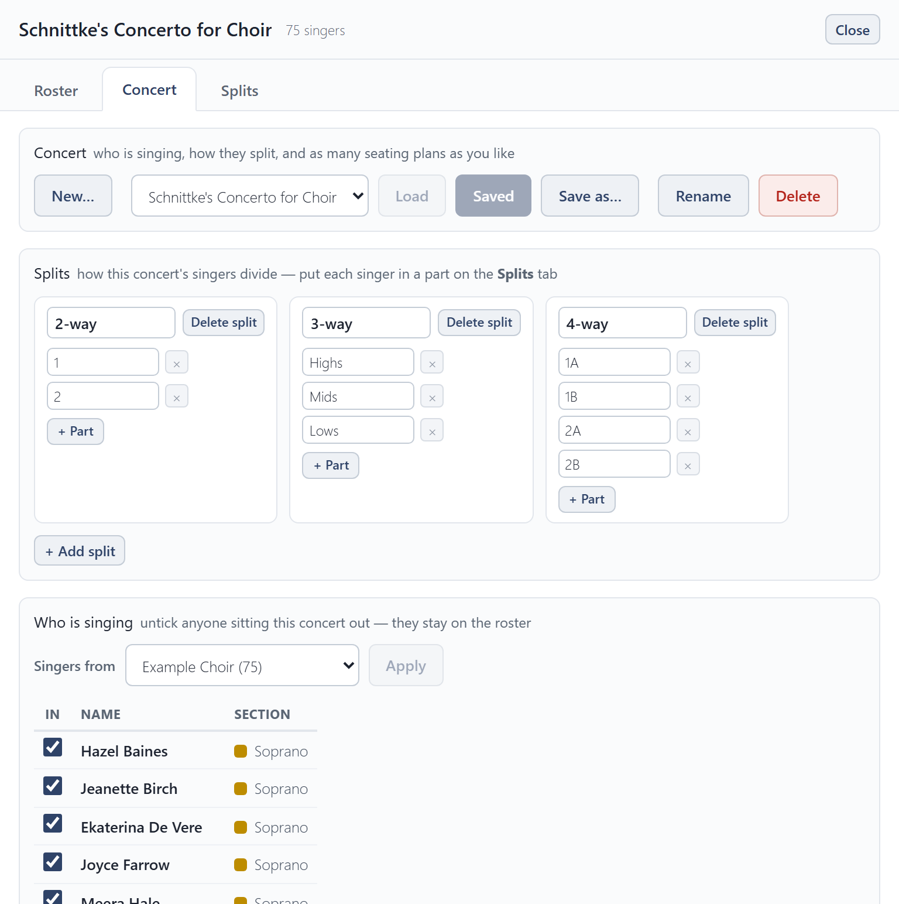
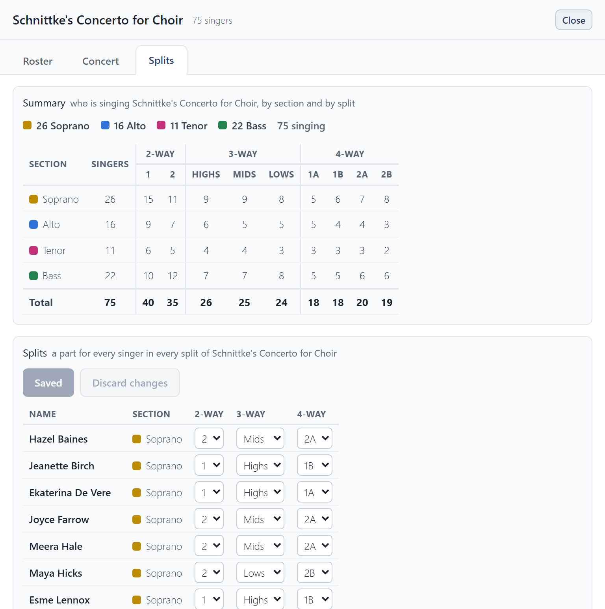

Choir setup
Choir setup, at the top right, is where the choir itself lives. It has three tabs: Roster, Concert and Splits.
Each tab works on a copy. Choose a roster or concert in its list and press Load, make your changes, then Save. If you leave a tab or close the window with changes you haven't saved, it asks whether to save or discard them.
Roster
A roster is a list of singers: each one's name and section. A concert takes its singers from one roster, so a correction to somebody's name here is right in every concert that uses it.

- New… starts an empty roster. Save as… copies the one you have open.
- To add a singer, press + Add singer under the list, type their name over New singer and choose their section. × removes a singer.
- Import roster… reads names and sections from an Excel workbook (
.xlsx) or a CSV file. Export roster saves the roster as a spreadsheet you can open in Excel or import again.
Concert
A concert is one performance: which roster it uses, who is singing, its splits, and its seating plans.

- Splits sets how the sections divide (see below).
- Who is singing: tick the singers in this concert. Anyone unticked stays on the roster for next time.
- Guests sing this concert only and are not added to the roster.
Splits
Pieces often divide the sections further: an SSAATTBB piece splits each section in two. A split is one of those ways of dividing, such as a 2-way split into 1 and 2, or a 3-way split into Highs, Mids and Lows. Add one for each way your pieces divide, and name its parts.
Auto-arrange seats each part together in every split at once, so one seating works for the whole concert.
Splits tab
The Splits tab says which part each singer sings in every split. The Summary at the top counts who is singing, by section and by split, so you can check the balance.

The examples
Choir Seating Tool comes with an example choir, the Example Choir, and two example concerts, Schnittke's Concerto for Choir and Così fan tutte. Each has two seating plans, so you can see what a finished setup looks like. They are yours to change or delete like anything else. Clear everything in Settings puts them back as they were, deleting everything else.